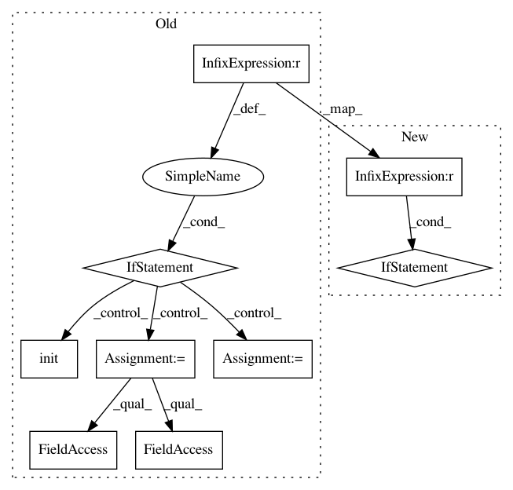

63944c0c160ee8bd2c1a0e08a259067c30163a09,mlflow/_spark_autologging.py,,autolog,#,92
Before Change
global _spark_table_info_listener
if _get_current_listener() is None:
active_session = _get_active_spark_session()
if active_session is None:
raise MlflowException(
"No active SparkContext found, refusing to enable Spark datasource "
"autologging. Please create a SparkSession e.g. via "
"SparkSession.builder.getOrCreate() (see API docs at "
"https://spark.apache.org/docs/latest/api/python/"
"pyspark.sql.html//pyspark.sql.SparkSession) "
"before attempting to enable autologging"
)
// We know SparkContext exists here already, so get it
sc = SparkContext.getOrCreate()
if _get_spark_major_version(sc) < 3:
raise MlflowException("Spark autologging unsupported for Spark versions < 3")
gw = active_session.sparkContext._gateway
params = gw.callback_server_parameters
callback_server_params = CallbackServerParameters(
address=params.address,
port=params.port,
daemonize=True,
daemonize_connections=True,
eager_load=params.eager_load,
ssl_context=params.ssl_context,
accept_timeout=params.accept_timeout,
read_timeout=params.read_timeout,
auth_token=params.auth_token,
)
gw.start_callback_server(callback_server_params)
event_publisher = _get_jvm_event_publisher()
try:
event_publisher.init(1)
_spark_table_info_listener = PythonSubscriber()
_spark_table_info_listener.register()
except Exception as e:
raise MlflowException(
"Exception while attempting to initialize JVM-side state for "
After Change
wrap_patch(SparkSession, "__init__", __init__)
active_session = _get_active_spark_session()
if active_session is not None:
// We know SparkContext exists here already, so get it
sc = SparkContext.getOrCreate()
_listen_for_spark_activity(sc)
def _get_repl_id():
Get a unique REPL ID for a PythonSubscriber instance. This is used to distinguish between
REPLs in multitenant, REPL-aware environments where multiple Python processes may share the
In pattern: SUPERPATTERN
Frequency: 3
Non-data size: 9
Instances
Project Name: mlflow/mlflow
Commit Name: 63944c0c160ee8bd2c1a0e08a259067c30163a09
Time: 2020-10-20
Author: andrewnitu@gmail.com
File Name: mlflow/_spark_autologging.py
Class Name:
Method Name: autolog
Project Name: mlflow/mlflow
Commit Name: 47a8162edbf28fcd47b0d99acab535ec57909cc3
Time: 2020-10-22
Author: andrewnitu@gmail.com
File Name: mlflow/_spark_autologging.py
Class Name:
Method Name: autolog
Project Name: ray-project/ray
Commit Name: 20ef4a860325d1735df038d4e4b8c7de5e013ed3
Time: 2020-03-11
Author: sven@anyscale.io
File Name: rllib/tests/test_multi_agent_pendulum.py
Class Name:
Method Name: